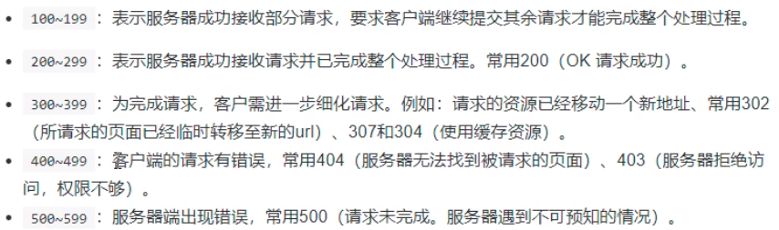
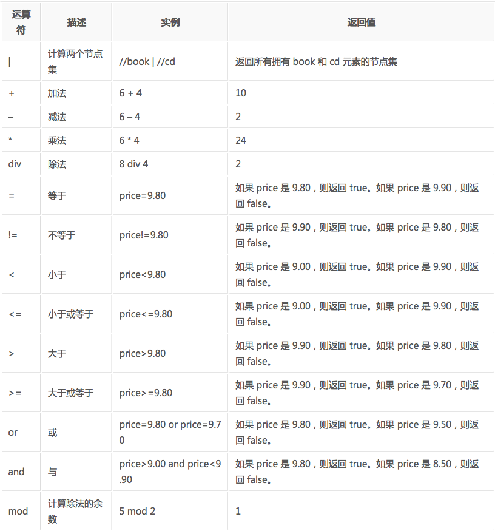
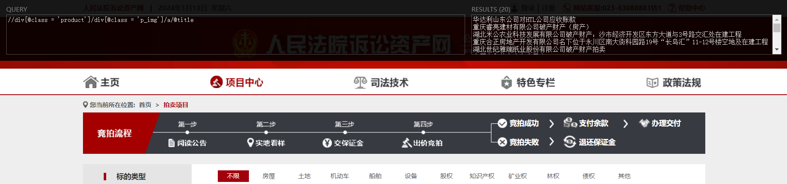
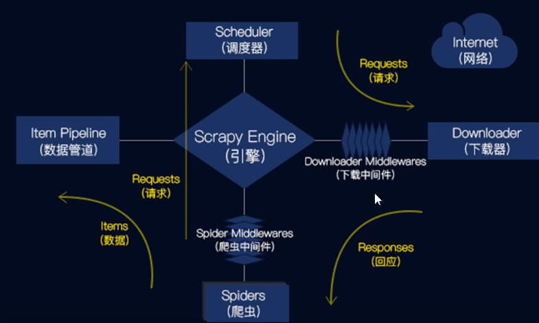

CONTENT OUTLINE
浅学一下爬虫
发现一个将内容文本生成电子书的项目，在npm中名为
GitBook
〇 目录
略
一 爬虫前奏
爬虫的实际例子：
- 搜索引擎（百度、谷歌、360搜索等）。
- 伯乐在线。
- 惠惠购物助手。
- 数据分析与研究（数据冰山知乎专栏）。
- 抢票软件等。
什么是网络爬虫：
- 通俗理解：爬虫是一个模拟人类请求网站行为的程序。可以自动请求网页、并数据抓取下来，然后使用一定的规则提取有价值的数据。
- 专业介绍：百度百科。
通用爬虫和聚焦爬虫
- 通用爬虫：通用爬虫是搜索引擎抓取系统（百度、谷歌、搜狗等）的重要组成部分。主要是将互联网上的网页下载到本地，形成一个互联网内容的镜像备份。
- 聚焦爬虫：是面向特定需求的一种网络爬虫程序，他与通用爬虫的区别在于：聚焦爬虫在实施网页抓取的时候会对内容进行筛选和处理，尽量保证只抓取与需求相关的网页信息。
为什么用Python写爬虫程序
- PHP：PHP是世界是最好的语言，但他天生不是做这个的，而且对多线程、异步支持不是很好，并发处理能力弱。爬虫是工具性程序，对速度和效率要求比较高。
- Java：生态圈很完善，是Python爬虫最大的竞争对手。但是Java语言本身很笨重，代码量很大。重构成本比较高，任何修改会导致代码大量改动。爬虫经常要修改采集代码。
- C/C++：运行效率是无敌的。但是学习和开发成本高。写个小爬虫程序可能要大半天时间。
- Python：语法优美、代码简洁、开发效率高、支持的模块多。相关的HTTP请求模块和HTML解析模块非常丰富。还有Scrapy和Scrapy-redis框架让我们开发爬虫变得异常简单。
准备工具
- Python3.6开发环境。
- Pycharm 2017 professional版。
- 虚拟环境。
virtualenv/virtualenvwrapper。
二 http协议和Chrome抓包工具
什么是http和https协议：
HTTP协议：全称是HyperText Transfer Protocol，中文意思是超文本传输协议，是一种发布和接收HTML页面的方法。服务器端口号是80端口。
HTTPS协议：是HTTP协议的加密版本，在HTTP下加入了SSL层。服务器端口号是443端口。
在浏览器中发送一个http请求的过程：
- 当用户在浏览器的地址栏中输入一个URL并按回车键之后，浏览器会向HTTP服务器发送HTTP请求。HTTP请求主要分为“Get”和“Post”两种方法。
- 当我们在浏览器输入URL http://www.baidu.com 的时候，浏览器发送一个Request请求去获取 http://www.baidu.com 的html文件，服务器把Response文件对象发送回给浏览器。
- 浏览器分析Response中的 HTML，发现其中引用了很多其他文件，比如Images文件，CSS文件，JS文件。 浏览器会自动再次发送Request去获取图片，CSS文件，或者JS文件。
- 当所有的文件都下载成功后，网页会根据HTML语法结构，完整的显示出来了。
url详解
URL是Uniform Resource Locator的简写，统一资源定位符。一个URL由以下几部分组成：
1 | scheme://host:port/path/?query-string=xxx#anchor |
- scheme：代表的是访问的协议，一般为
http或者https以及ftp等。 - host：主机名，域名，比如
www.baidu.com。 - port：端口号。当你访问一个网站的时候，浏览器默认使用80端口。
- path：查找路径。比如：
www.jianshu.com/trending/now，后面的trending/now就是path。 - query-string：查询字符串，比如：
www.baidu.com/s?wd=python，后面的wd=python就是查询字符串。 - anchor：锚点，后台一般不用管，前端用来做页面定位的。
在浏览器中请求一个url，浏览器会对这个url进行一个编码。除英文字母，数字和部分符号外，其他的全部使用百分号+十六进制码值进行编码。
常用的请求方法：
在Http协议中，定义了八种请求方法。这里介绍两种常用的请求方法，分别是get请求和post请求。
get请求：一般情况下，只从服务器获取数据下来，并不会对服务器资源产生任何影响的时候会使用get请求。post请求：向服务器发送数据（登录）、上传文件等，会对服务器资源产生影响的时候会使用post请求。
以上是在网站开发中常用的两种方法。并且一般情况下都会遵循使用的原则。但是有的网站和服务器为了做反爬虫机制，也经常会不按常理出牌，有可能一个应该使用get方法的请求就一定要改成post请求，这个要视情况而定。
请求头常见参数：
在http协议中，向服务器发送一个请求，数据分为三部分，第一个是把数据放在url中，第二个是把数据放在body中（在post请求中），第三个就是把数据放在head中。这里介绍在网络爬虫中经常会用到的一些请求头参数：
User-Agent：浏览器名称。这个在网络爬虫中经常会被使用到。请求一个网页的时候，服务器通过这个参数就可以知道这个请求是由哪种浏览器发送的。如果我们是通过爬虫发送请求，那么我们的User-Agent就是Python，这对于那些有反爬虫机制的网站来说，可以轻易的判断你这个请求是爬虫。因此我们要经常设置这个值为一些浏览器的值，来伪装我们的爬虫。Referer：表明当前这个请求是从哪个url过来的。这个一般也可以用来做反爬虫技术。如果不是从指定页面过来的，那么就不做相关的响应。Cookie：http协议是无状态的。也就是同一个人发送了两次请求，服务器没有能力知道这两个请求是否来自同一个人。因此这时候就用cookie来做标识。一般如果想要做登录后才能访问的网站，那么就需要发送cookie信息了。
常见响应状态码：
200：请求正常，服务器正常的返回数据。301：永久重定向。比如在访问www.jingdong.com的时候会重定向到www.jd.com。302：临时重定向。比如在访问一个需要登录的页面的时候，而此时没有登录，那么就会重定向到登录页面。400：请求的url在服务器上找不到。换句话说就是请求url错误。403：服务器拒绝访问，权限不够。500：服务器内部错误。可能是服务器出现bug了。

Chrome抓包工具：
Chrome浏览器是一个非常亲近开发者的浏览器。可以方便的查看网络请求以及发送的参数。对着网页右键->检查。
三 urllib库
urllib库是Python中一个最基本的网络请求库。可以模拟浏览器的行为，向指定的服务器发送一个请求，并可以保存服务器返回的数据。
urlopen函数：
在Python3的urllib库中，所有和网络请求相关的方法，都被集到urllib.request模块下面了，以先来看下urlopen函数基本的使用：
1 | from urllib import request |
实际上，使用浏览器访问百度，右键查看源代码。你会发现，跟我们刚才打印出来的数据是一模一样的。也就是说，上面的三行代码就已经帮我们把百度的首页的全部代码爬下来了。一个基本的url请求对应的python代码真的非常简单。
以下对urlopen函数的进行详细讲解：
url：请求的url。data：请求的data，如果设置了这个值，那么将变成post请求。- 返回值：返回值是一个
http.client.HTTPResponse对象，这个对象是一个类文件句柄对象。有read(size)、readline、readlines以及getcode等方法。
urlretrieve函数：
这个函数可以方便的将网页上的一个文件保存到本地。以下代码可以非常方便的将百度的首页下载到本地：
1 | from urllib import request |
urlencode函数：
用浏览器发送请求的时候，如果url中包含了中文或者其他特殊字符，那么浏览器会自动的给我们进行编码。而如果使用代码发送请求，那么就必须手动的进行编码，这时候就应该使用urlencode函数来实现。urlencode可以把字典数据转换为URL编码的数据。示例代码如下：
1 | from urllib import parse |
parse_qs函数：
可以将经过编码后的url参数进行解码。示例代码如下：
1 | from urllib import parse |
urlparse和urlsplit：
有时候拿到一个url，想要对这个url中的各个组成部分进行分割，那么这时候就可以使用urlparse或者是urlsplit来进行分割。示例代码如下：
1 | from urllib import request,parse |
urlparse和urlsplit基本上是一模一样的。唯一不一样的地方是，urlparse里面多了一个params属性，而urlsplit没有这个params属性。比如有一个url为：url = 'http://www.baidu.com/s/hello?wd=python&username=abc#1'，
那么urlparse可以获取到hello，而urlsplit不可以获取到。url中的params也用得比较少。
request.Request类：
如果想要在请求的时候增加一些请求头，那么就必须使用request.Request类来实现。比如要增加一个User-Agent，示例代码如下：
1 | from urllib import request |
ProxyHandler处理器（代理设置）
很多网站会检测某一段时间某个IP的访问次数(通过流量统计，系统日志等)，如果访问次数多的不像正常人，它会禁止这个IP的访问。 所以我们可以设置一些代理服务器，每隔一段时间换一个代理，就算IP被禁止，依然可以换个IP继续爬取。
urllib中通过ProxyHandler来设置使用代理服务器，下面代码说明如何使用自定义opener来使用代理：
1 | from urllib import request |
常用的代理有：
什么是cookie：
在网站中，http请求是无状态的。也就是说即使第一次和服务器连接后并且登录成功后，第二次请求服务器依然不能知道当前请求是哪个用户。cookie的出现就是为了解决这个问题，第一次登录后服务器返回一些数据（cookie）给浏览器，然后浏览器保存在本地，当该用户发送第二次请求的时候，就会自动的把上次请求存储的cookie数据自动的携带给服务器，服务器通过浏览器携带的数据就能判断当前用户是哪个了。cookie存储的数据量有限，不同的浏览器有不同的存储大小，但一般不超过4KB。因此使用cookie只能存储一些小量的数据。
cookie的格式：
1 | Set-Cookie: NAME=VALUE；Expires/Max-age=DATE；Path=PATH；Domain=DOMAIN_NAME；SECURE |
参数意义：
- NAME：cookie的名字。
- VALUE：cookie的值。
- Expires：cookie的过期时间。
- Path：cookie作用的路径。
- Domain：cookie作用的域名。
- SECURE：是否只在https协议下起作用。
使用cookielib库和HTTPCookieProcessor模拟登录：
Cookie 是指网站服务器为了辨别用户身份和进行Session跟踪，而储存在用户浏览器上的文本文件，Cookie可以保持登录信息到用户下次与服务器的会话。
这里以人人网为例。人人网中，要访问某个人的主页，必须先登录才能访问，登录说白了就是要有cookie信息。那么如果我们想要用代码的方式访问，就必须要有正确的cookie信息才能访问。解决方案有两种，第一种是使用浏览器访问，然后将cookie信息复制下来，放到headers中。示例代码如下：
1 | from urllib import request |
但是每次在访问需要cookie的页面都要从浏览器中复制cookie比较麻烦。
在Python处理Cookie，一般是通过http.cookiejar模块和urllib模块的HTTPCookieProcessor处理器类一起使用。http.cookiejar模块主要作用是提供用于存储cookie的对象。而HTTPCookieProcessor处理器主要作用是处理这些cookie对象，并构建handler对象。
http.cookiejar模块：
该模块主要的类有CookieJar、FileCookieJar、MozillaCookieJar、LWPCookieJar。这四个类的作用分别如下：
- CookieJar：管理HTTP cookie值、存储HTTP请求生成的cookie、向传出的HTTP请求添加cookie的对象。整个cookie都存储在内存中，对CookieJar实例进行垃圾回收后cookie也将丢失。
- FileCookieJar (filename,delayload=None,policy=None)：从CookieJar派生而来，用来创建FileCookieJar实例，检索cookie信息并将cookie存储到文件中。filename是存储cookie的文件名。delayload为True时支持延迟访问访问文件，即只有在需要时才读取文件或在文件中存储数据。
- MozillaCookieJar (filename,delayload=None,policy=None)：从FileCookieJar派生而来，创建与Mozilla浏览器 cookies.txt兼容的FileCookieJar实例。
- LWPCookieJar (filename,delayload=None,policy=None)：从FileCookieJar派生而来，创建与libwww-perl标准的 Set-Cookie3 文件格式兼容的FileCookieJar实例。
登录人人网：
利用http.cookiejar和request.HTTPCookieProcessor登录人人网。相关示例代码如下：
1 | from urllib import request,parse |
保存cookie到本地：
保存cookie到本地，可以使用cookiejar的save方法，并且需要指定一个文件名：
1 | from urllib import request |
从本地加载cookie：
从本地加载cookie，需要使用cookiejar的load方法，并且也需要指定方法：
1 | from urllib import request |
四 requests库
虽然Python的标准库中 urllib模块已经包含了平常我们使用的大多数功能，但是它的 API 使用起来让人感觉不太好，而 Requests宣传是 “HTTP for Humans”，说明使用更简洁方便。
安装和文档地址：
利用pip可以非常方便的安装：
1 | pip install requests |
中文文档：http://docs.python-requests.org/zh_CN/latest/index.html
github地址：https://github.com/requests/requests
发送GET请求：
最简单的发送
get请求就是通过requests.get来调用：1
response = requests.get("http://www.baidu.com/")
添加headers和查询参数：
如果想添加 headers，可以传入headers参数来增加请求头中的headers信息。如果要将参数放在url中传递，可以利用 params 参数。相关示例代码如下：
1
2
3
4
5
6
7
8
9
10
11
12
13
14
15
16
17
18
19
20
21
22
23import requests
kw = {'wd':'中国'}
headers = {"User-Agent": "Mozilla/5.0 (Windows NT 10.0; Win64; x64) AppleWebKit/537.36 (KHTML, like Gecko) Chrome/54.0.2840.99 Safari/537.36"}
# params 接收一个字典或者字符串的查询参数，字典类型自动转换为url编码，不需要urlencode()
response = requests.get("http://www.baidu.com/s", params = kw, headers = headers)
# 查看响应内容，response.text 返回的是Unicode格式的数据
print(response.text)
# 查看响应内容，response.content返回的字节流数据
print(response.content)
# 查看完整url地址
print(response.url)
# 查看响应头部字符编码
print(response.encoding)
# 查看响应码
print(response.status_code)
发送POST请求：
最基本的POST请求可以使用
post方法：1
response = requests.post("http://www.baidu.com/",data=data)
传入data数据：
这时候就不要再使用
urlencode进行编码了，直接传入一个字典进去就可以了。比如请求拉勾网的数据的代码：1
2
3
4
5
6
7
8
9
10
11
12
13
14
15
16
17
18import requests
url = "https://www.lagou.com/jobs/positionAjax.json?city=%E6%B7%B1%E5%9C%B3&needAddtionalResult=false&isSchoolJob=0"
headers = {
'User-Agent': 'Mozilla/5.0 (Windows NT 10.0; Win64; x64) AppleWebKit/537.36 (KHTML, like Gecko) Chrome/62.0.3202.94 Safari/537.36',
'Referer': 'https://www.lagou.com/jobs/list_python?labelWords=&fromSearch=true&suginput='
}
data = {
'first': 'true',
'pn': 1,
'kd': 'python'
}
resp = requests.post(url,headers=headers,data=data)
# 如果是json数据，直接可以调用json方法
print(resp.json())
使用代理：
使用requests添加代理也非常简单，只要在请求的方法中（比如get或者post）传递proxies参数就可以了。示例代码如下：
1 | import requests |
cookie：
如果在一个响应中包含了cookie，那么可以利用cookies属性拿到这个返回的cookie值：
1 | import requests |
session：
之前使用urllib库，是可以使用opener发送多个请求，多个请求之间是可以共享cookie的。那么如果使用requests，也要达到共享cookie的目的，那么可以使用requests库给我们提供的session对象。
注意，这里的session不是web开发中的那个session，这个地方只是一个会话的对象而已。还是以登录人人网为例，使用requests来实现。示例代码如下：
1 | import requests |
处理不信任的SSL证书：
对于那些已经被信任的SSL整数的网站，比如https://www.baidu.com/，那么使用requests直接就可以正常的返回响应。示例代码如下：
1 | resp = requests.get('http://www.12306.cn/mormhweb/',verify=False) |
五 页面解析和数据提取
1 两种数据处理
非结构化的数据处理
- 文本、电话号码、邮箱地址：正则表达式
- Html文件：正则表达式、XPath、CSS选择器
非结构化的数据处理：JSON字符串
2 XPath语法和lxml模块
什么是XPath？
xpath（XML Path Language）是一门在XML和HTML文档中查找信息的语言，可用来在XML和HTML文档中对元素和属性进行遍历。
XPath开发工具
- Chrome插件XPath Helper。
- Firefox插件Try XPath。
3 XPath语法
选取节点：
XPath 使用路径表达式来选取 XML 文档中的节点或者节点集。这些路径表达式和我们在常规的电脑文件系统中看到的表达式非常相似。
| 表达式 | 描述 | 示例 | 结果 |
|---|---|---|---|
| nodename | 选取此节点的所有子节点 | bookstore | 选取bookstore下所有的子节点 |
| / | 如果是在最前面，代表从根节点选取。否则选择某节点下的某个节点 | /bookstore | 选取根元素下所有的bookstore节点 |
| // | 从全局节点中选择节点，随便在哪个位置 | //book | 从全局节点中找到所有的book节点 |
| @ | 选取某个节点的属性 | //book[@price] | 选择所有拥有price属性的book节点 |
| . | 当前节点 | ./a | 选取当前节点下的a标签 |
谓语：
谓语用来查找某个特定的节点或者包含某个指定的值的节点，被嵌在方括号中。
在下面的表格中，我们列出了带有谓语的一些路径表达式，以及表达式的结果：
| 路径表达式 | 描述 |
|---|---|
| /bookstore/book[1] | 选取bookstore下的第一个子元素 |
| /bookstore/book[last()] | 选取bookstore下的倒数第二个book元素。 |
| bookstore/book[position()<3] | 选取bookstore下前面两个子元素。 |
| //book[@price] | 选取拥有price属性的book元素 |
| //book[@price=10] | 选取所有属性price等于10的book元素 |
通配符
*表示通配符。
| 通配符 | 描述 | 示例 | 结果 |
|---|---|---|---|
| * | 匹配任意节点 | /bookstore/* | 选取bookstore下的所有子元素。 |
| @* | 匹配节点中的任何属性 | //book[@*] | 选取所有带有属性的book元素。 |
选取多个路径：
通过在路径表达式中使用“|”运算符，可以选取若干个路径。
示例如下：
1 | //bookstore/book | //book/title |
运算符：

4 lxml库
lxml 是 一个HTML/XML的解析器，主要的功能是如何解析和提取 HTML/XML 数据。
lxml和正则一样，也是用 C 实现的，是一款高性能的 Python HTML/XML 解析器，我们可以利用之前学习的XPath语法，来快速的定位特定元素以及节点信息。
lxml python 官方文档：http://lxml.de/index.html
需要安装C语言库，可使用 pip 安装：pip install lxml【或用wheel安装】
基本使用：
我们可以利用他来解析HTML代码，并且在解析HTML代码的时候，如果HTML代码不规范，他会自动的进行补全。示例代码如下：
1 | # 使用 lxml 的 etree 库 |
输入结果如下：
1 | <html><body> |
可以看到，lxml会自动修改HTML代码【自动补全】
例子中不仅补全了li标签，还添加了body，html标签
从文件中读取html代码：
除了直接使用字符串进行解析，lxml还支持从文件中读取内容。我们新建一个hello.html文件：
1 | <!-- hello.html --> |
然后利用etree.parse()方法来读取文件。示例代码如下：
1 | from lxml import etree |
输入结果和之前是相同的。
在lxml中使用XPath语法：
获取所有li标签：
1
2
3
4
5
6
7
8from lxml import etree
html = etree.parse('hello.html')
print type(html) # 显示etree.parse() 返回类型
result = html.xpath('//li')
print(result) # 打印<li>标签的元素集合获取所有li元素下的所有class属性的值：
1
2
3
4
5
6from lxml import etree
html = etree.parse('hello.html')
result = html.xpath('//li/@class')
print(result)获取li标签下href为
www.baidu.com的a标签：1
2
3
4
5
6from lxml import etree
html = etree.parse('hello.html')
result = html.xpath('//li/a[@href="www.baidu.com"]')
print(result)获取li标签下所有span标签：
1
2
3
4
5
6
7
8
9
10
11from lxml import etree
html = etree.parse('hello.html')
#result = html.xpath('//li/span')
#注意这么写是不对的：
#因为 / 是用来获取子元素的，而 <span> 并不是 <li> 的子元素，所以，要用双斜杠
result = html.xpath('//li//span')
print(result)获取li标签下的a标签里的所有class：
1
2
3
4
5
6from lxml import etree
html = etree.parse('hello.html')
result = html.xpath('//li/a//@class')
print(result)获取最后一个li的a的href属性对应的值：
1
2
3
4
5
6
7
8from lxml import etree
html = etree.parse('hello.html')
result = html.xpath('//li[last()]/a/@href')
# 谓语 [last()] 可以找到最后一个元素
print(result)获取倒数第二个li元素的内容：
1
2
3
4
5
6
7from lxml import etree
html = etree.parse('hello.html')
result = html.xpath('//li[last()-1]/a')
# text 方法可以获取元素内容
print(result[0].text)获取倒数第二个li元素的内容的第二种方式：
1
2
3
4
5
6from lxml import etree
html = etree.parse('hello.html')
result = html.xpath('//li[last()-1]/a/text()')
print(result)寻找符合要求的li标签，要求其属性class中包含
item-1
2
3
4
5
6from lxml import etree
html = etree.parse('hello.html')
result = html.xpath('//li[contain(@class, 'item-')]')
print(result)寻找符合要求的li标签，要求其内容中包含
item1
2
3
4
5
6from lxml import etree
html = etree.parse('hello.html')
result = html.xpath('//li[contain(txt(), 'item')]')
print(result)
5 BeautifulSoup4 库
和 lxml 一样，Beautiful Soup 也是一个HTML/XML的解析器，主要的功能也是如何解析和提取 HTML/XML 数据。
lxml 只会局部遍历，而Beautiful Soup 是基于HTML DOM（Document Object Model）的，会载入整个文档，解析整个DOM树，因此时间和内存开销都会大很多，所以性能要低于lxml。
BeautifulSoup 用来解析 HTML 比较简单，API非常人性化，支持CSS选择器、Python标准库中的HTML解析器，也支持 lxml 的 XML解析器。
安装和文档：
Beautiful Soup 3 目前已经停止开发，推荐现在的项目使用Beautiful Soup 4。
视频教程参考此处
- 安装：
pip install bs4。 - 中文文档：https://www.crummy.com/software/BeautifulSoup/bs4/doc/index.zh.html
几大解析工具对比：
| 解析工具 | 解析速度 | 使用难度 |
|---|---|---|
| BeautifulSoup | 最慢 | 最简单 |
| lxml | 快 | 简单 |
| 正则 | 最快 | 最难 |
简单使用：
常用解析器：
【Python标准库】BeautifulSoup(markup, "html.parser")
【lxml HTML 解析器】BeautifulSoup(markup, "lxml")
1 | from bs4 import BeautifulSoup |
四个常用的对象
Beautiful Soup将复杂HTML文档转换成一个复杂的树形结构,每个节点都是Python对象,所有对象可以归纳为4种:
- Tag
- NavigatableString
- BeautifulSoup
- Comment
1. Tag
Tag 通俗点讲就是 HTML 中的一个个标签。示例代码如下：
1 | from bs4 import BeautifulSoup |
我们可以利用 soup 加标签名轻松地获取这些标签的内容，这些对象的类型是bs4.element.Tag。但是注意，它查找的是在所有内容中的第一个符合要求的标签。如果要查询所有的标签，后面会进行介绍。
对于Tag，它有两个重要的属性，分别是name和attrs。示例代码如下：
1 | print soup.name |
2. NavigableString
如果拿到标签后，还想获取标签中的内容。那么可以通过tag.string获取标签中的文字。示例代码如下：
1 | print soup.p.string |
3. BeautifulSoup
BeautifulSoup 对象表示的是一个文档的全部内容，大部分时候，可以把它当作 Tag 对象。它支持 遍历文档树 和 搜索文档树 中描述的大部分的方法。
因为 BeautifulSoup 对象并不是真正的HTML或XML的tag,所以它没有name和attribute属性。但有时查看它的 .name 属性是很方便的，所以 BeautifulSoup 对象包含了一个值为 “[document]” 的特殊属性 .name
1 | soup.name |
4. Comment
Tag , NavigableString , BeautifulSoup 几乎覆盖了html和xml中的所有内容。但是还有一些特殊对象：文档的注释部分
1 | markup = "<b><!--Hey, buddy. Want to buy a used parser?--></b>" |
Comment 对象是一个特殊类型的 NavigableString 对象:
1 | comment |
遍历文档树：
1. contents和children
1 | html_doc = """ |
2. strings 和 stripped_strings
如果tag中包含多个字符串 [2] ,可以使用 .strings 来循环获取：
1 | for string in soup.strings: |
输出的字符串中可能包含了很多空格或空行,使用 .stripped_strings 可以去除多余空白内容：
1 | for string in soup.stripped_strings: |
搜索文档树
1. find和find_all方法：
搜索文档树，一般用得比较多的就是两个方法，一个是find，一个是find_all。find方法是找到第一个满足条件的标签后就立即返回，只返回一个元素。find_all方法是把所有满足条件的标签都选到，然后返回回去。使用这两个方法，最常用的用法是出入name以及attr参数找出符合要求的标签。
1 | soup.find_all("a",attrs={"id":"link2"}) |
或者是直接传入属性的的名字作为关键字参数：
1 | soup.find_all("a",id='link2') |
2. select方法：
使用以上方法可以方便的找出元素。但有时候使用css选择器的方式可以更加的方便。使用css选择器的语法，应该使用select方法。以下列出几种常用的css选择器方法：
（1）通过标签名查找：
1 | print(soup.select('a')) |
（2）通过类名查找：
通过类名，则应该在类的前面加一个.。比如要查找class=sister的标签。示例代码如下：
1 | print(soup.select('.sister')) |
（3）通过id查找：
通过id查找，应该在id的名字前面加一个＃号。示例代码如下：
1 | print(soup.select("#link1")) |
（4）组合查找：
组合查找即和写 class 文件时，标签名与类名、id名进行的组合原理是一样的，例如查找 p 标签中，id 等于 link1的内容，二者需要用空格分开：
1 | print(soup.select("p #link1")) |
直接子标签查找，则使用 > 分隔：
1 | print(soup.select("head > title")) |
（5）通过属性查找：
查找时还可以加入属性元素，属性需要用中括号括起来，注意属性和标签属于同一节点，所以中间不能加空格，否则会无法匹配到。示例代码如下：
1 | print(soup.select('a[href="http://example.com/elsie"]')) |
（6）获取内容
以上的 select 方法返回的结果都是列表形式，可以遍历形式输出，然后用 get_text() 方法来获取它的内容。
1 | soup = BeautifulSoup(html, 'lxml') |
案例
爬取淘宝网首页所有链接
1 | import requests |
大概看了些，个人觉得学这东西就是浪费生命！！！Over！！！
六 案例
案例一：百度贴吧图片下载
通过
request拿到网页的源代码数据通过
lxml对源代码数据进行解析，拿到图片的url依次对图片数据发送网络请求
将图片的原始内容写入【
.content表示多媒体二进制数据，.text表示文本数据】
1 | # 可修改为根据用户输入去下载图片 |
案例二：爬取酷狗音乐
爬虫的本质是模拟人类使用浏览器的动作，用于处理大量重复性工作，而已罢了！
还是需要人工去Chrome控制台寻找和鉴别：哪一个是获取歌单的地址，哪一个是发送的数据请求的地址
1 | import requests |
案例三：法拍网数据获取【无法运行】
任务：在项目中心中，拿取房屋信息
小工具Tip：浏览器中xpath插件

四个步骤：
- 发送请求
- 查看结果
- 提取数据
- 处理数据
1 | import requests |
案例四：获取虎扑NBA数据
此处提到过使用vscode调试python代码的过程中，可以使用
#%%来包裹代码块，使得该部分选择性执行
1 | import requests |
七 Python连接数据库
用到第三方库：mysql-connector，其他的用到了再说
八 爬虫框架【Scrapy】
一套代码模板：获取数据【requests】、解析数据【BeautifulSoup】、提取数据、存储数据
常见爬虫框架：Scrapy、PySpider【Python环模型框架】、Crawley【侧重于提取数据的方式】、Portia【可视化】、Newspaper【提取新闻、文章等内容分析】
Scrapy使用pip安装，其安装之前需要先安装
Twisted
写一个爬虫，需要做很多的事情。比如：发送网络请求、数据解析、数据存储、反反爬虫机制（更换ip代理、设置请求头等）、异步请求等。这些工作如果每次都要自己从零开始写的话，比较浪费时间。因此Scrapy把一些基础的东西封装好了，在他上面写爬虫可以变的更加的高效（爬取效率和开发效率）。

Scrapy框架模块功能：
Scrapy Engine（引擎）：Scrapy框架的核心部分。负责在Spider和ItemPipeline、Downloader、Scheduler中间通信、传递数据等。Spider（爬虫）：发送需要爬取的链接给引擎，最后引擎把其他模块请求回来的数据再发送给爬虫，爬虫就去解析想要的数据。这个部分是我们开发者自己写的，因为要爬取哪些链接，页面中的哪些数据是我们需要的，都是由程序员自己决定。Scheduler（调度器）：负责接收引擎发送过来的请求，并按照一定的方式进行排列和整理，负责调度请求的顺序等。Downloader（下载器）：负责接收引擎传过来的下载请求，然后去网络上下载对应的数据再交还给引擎。Item Pipeline（管道）：负责将Spider（爬虫）传递过来的数据进行保存。具体保存在哪里，应该看开发者自己的需求。Downloader Middlewares（下载中间件）：可以扩展下载器和引擎之间通信功能的中间件。Spider Middlewares（Spider中间件）：可以扩展引擎和爬虫之间通信功能的中间件。
省略具体的内容，因为大概率用不到。如果要用，要么找更好的教程，要么参考此视频教程